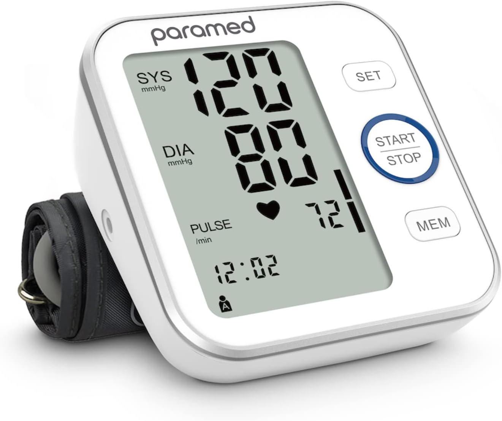

SUGAR TESTING MACHINE

Blood glucose monitoring is the use of a glucose meter for testing the concentration of glucose in the blood (glycemia). Particularly important in diabetes management, a blood glucose test is typically performed by piercing the skin (typically, via fingerstick) to draw blood, then applying the blood to a chemically active disposable 'test-strip'. The other main option is continuous glucose monitoring (CGM). Different manufacturers use different technology, but most systems measure an electrical characteristic and use this to determine the glucose level in the blood. Skin-prick methods measure capillary blood glucose (i.e., the level found in capillary blood), whereas CGM correlates interstitial fluid glucose level to blood glucose level. Measurements may occur after fasting or at random nonfasting intervals (random glucose tests), each of which informs diagnosis or monitoring in different ways. Healthcare professionals advise patients with diabetes mellitus on the appropriate monitoring regimen for their condition. Most people with type 2 diabetes test at least once per day. The Mayo Clinic generally recommends that diabetics who use insulin (all type 1 diabetics and many type 2 diabetics) test their blood sugar more often (4–8 times per day for type 1 diabetics, 2 or more times per day for type 2 diabetics),[1] both to assess the effectiveness of their prior insulin dose and to help determine their next insulin dose.
PRESSURE TESTING MACHINE
In humans, the cuff is normally placed smoothly and snugly around an upper arm, at roughly the same vertical height as the heart while the subject is seated with the arm supported. Other sites of placement depend on species and may include the flipper or tail. It is essential that the correct size of cuff is selected for the patient. Too small a cuff results in too high a pressure, while too large a cuff results in too low a pressure. For clinical measurements it is usual to measure and record both arms in the initial consultation to determine if the pressure is significantly higher in one arm than the other. A difference of 10 mmHg may be a sign of coarctation of the aorta. If the arms read differently, the higher reading arm would be used for later readings.[21] The cuff is inflated until the artery is completely occluded. With a manual instrument, listening with a stethoscope to the brachial artery, the examiner slowly releases the pressure in the cuff at a rate of approximately 2 mmHg per heart beat. As the pressure in the cuffs falls, a "whooshing" or pounding sound is heard (see Korotkoff sounds) when blood flow first starts again in the artery. The pressure at which this sound began is noted and recorded as the systolic blood pressure. The cuff pressure is further released until the sound can no longer be heard. This is recorded as the diastolic blood pressure. In noisy environments where auscultation is impossible (such as the scenes often encountered in emergency medicine), systolic blood pressure alone may be read by releasing the pressure until a radial pulse is palpated (felt). In veterinary medicine, auscultation is rarely of use, and palpation or visualization of pulse distal to the sphygmomanometer is used to detect systolic pressure.
Electrocardiography(ECG)
Electrocardiography is the process of producing an electrocardiogram (ECG or EKG[a]), a recording of the heart's electrical activity through repeated cardiac cycles.[4] It is an electrogram of the heart which is a graph of voltage versus time of the electrical activity of the heart[5] using electrodes placed on the skin. These electrodes detect the small electrical changes that are a consequence of cardiac muscle depolarization followed by repolarization during each cardiac cycle (heartbeat). Changes in the normal ECG pattern occur in numerous cardiac abnormalities, including.During each heartbeat, a healthy heart has an orderly progression of depolarization that starts with pacemaker cells in the sinoatrial node, spreads throughout the atrium, and passes through the atrioventricular node down into the bundle of His and into the Purkinje fibers, spreading down and to the left throughout the ventricles.[12] This orderly pattern of depolarization gives rise to the characteristic ECG tracing. To the trained clinician, an ECG conveys a large amount of information about the structure of the heart and the function of its electrical conduction system.[13] Among other things, an ECG can be used to measure the rate and rhythm of heartbeats, the size and position of the heart chambers, the presence of any damage to the heart's muscle cells or conduction system, the effects of heart drugs, and the function of implanted pacemakers.
Glucose Trips
Insulin pumps, cartridges, and infusion sets may be far more expensive than syringes used for insulin injection with several insulin pumps costing more than $6,000; necessary supplies can cost over $300.[3] Another disadvantage of insulin pump use is a higher risk of developing diabetic ketoacidosis if the pump malfunctions.[3] This can happen if the pump battery is discharged, if the insulin is inactivated by heat exposure, if the insulin reservoir runs empty, the tubing becomes loose and insulin leaks rather than being injected, or if the cannula becomes bent or kinked in the body, preventing delivery.[3] Therefore, pump users typically monitor their blood sugars more frequently to evaluate the effectiveness of insulin delivery. Since the insulin pump needs to be worn most of the time, pump users need strategies to participate in activities that may damage the pump, such as rough sports and activities in the water. Some users may find that wearing the pump all the time (together with the infusion set tubing) is uncomfortable or unwieldy. Possibility of insulin pump malfunctioning, and having to resort back to multiple daily injections until a replacement becomes available. However most pump manufacturers will have a program that will get a new pump to the user within 24 hours or allow the user to buy a second pump as a backup for a small fee. Additionally the pump itself will make many safety checks throughout the day, in some cases up to 4,000,000 and may have a second microprocessor dedicated to this.[citation needed] Users may experience scar tissue buildup around the inserted cannula, resulting in a hard bump under the skin after the cannula is removed. The scar tissue does not heal particularly fast, so years of wearing the pump and changing the infusion site will cause the user to start running out of viable "spots" to wear the pump. In addition, the areas with scar tissue buildup generally have lower insulin sensitivity and may affect basal rates and bolus amounts. In some extreme cases the insulin delivery will appear to have no/little effect on lowering blood glucose levels and the site must be changed.
Lumira Dx
LumiraDx a healthcare solutions care management company specializing in the comprehensive Roche is a global pioneer in pharmaceuticals and diagnostics focused on advancing science to improve people’s lives. The combined strengths of pharmaceuticals and diagnostics under one roof have made Roche the leader in personalised healthcare – a strategy that aims to fit the right treatment to each patient in the best way possible. Roche is the world’s largest biotech company, with truly differentiated medicines in oncology, immunology, infectious diseases, ophthalmology and diseases of the central nervous system. Roche is also the world leader in in vitro diagnostics and tissue-based cancer diagnostics, and a frontrunner in diabetes management. Founded in 1896, Roche continues to search for better ways to prevent, diagnose and treat diseases and make a sustainable contribution to society. The company also aims to improve patient access to medical innovations by working with all relevant stakeholders.
OUR ANOTHER PRODUCT
First Aid Kit
A first aid kit or medical kit is a collection of supplies and equipment used to give immediate medical treatment, primarily to treat injuries and other mild or moderate medical conditions. There is a wide variation in the contents of first aid kits based on the knowledge and experience of those putting it together, the differing first aid requirements of the area where it may be used, and variations in legislation or regulation in a given area. The international standard for first aid kits is that they should be identified with the ISO graphical symbol for first aid (from ISO 7010), which is an equal white cross on a green background.[1] Standard kits often come in durable plastic boxes, fabric pouches or in wall mounted cabinets. The type of container will vary depending on the purpose, and they range in size from wallet-sized through to a large box. It is recommended that all kits are kept in a clean dust- and damp-proof container in order to keep the contents safe and aseptic.

Diagnosis kit
Rapid diagnostic kits based on immunofiltration or immunochromatography principles with dyes or colloid gold as markers have been developed and applied in field because of its rapid, sensitive and simple advantages. The rapid diagnostic tests commonly used in P.R. China including the dot immunogold filtration assay (DIGFA) where the probe is anti-human IgG labelled with colloidal gold, the dipstick dye immunoassay (DDIA) where it consists of the antigen labelled with a blue colloidal dye and the latex immuno-chromatographic assay (DLIA). The results of the test are revealed by anti-human IgG tagged with red latex particles (Zhu, 2005). Hu et al. from the NIPD-CTDR has constructed a cDNA library of different stages of schistosomes since 2000 through the research of S. japonicum functional genomics (Hu et al., 2003, 2004), and obtained effective recombinant antigen by cDNA library immunoscreening .
Gloves
Medical gloves are disposable gloves used during medical examinations and procedures to help prevent cross-contamination between caregivers and patients.[1] Medical gloves are made of different polymers including latex, nitrile rubber, polyvinyl chloride and neoprene; they come unpowdered, or powdered with corn starch to lubricate the gloves, making them easier to put on the hands.[2] Corn starch replaced tissue-irritating lycopodium powder and talc, but even corn starch can impede healing if it gets into tissues (as during surgery). As such, unpowdered gloves are used more often during surgery and other sensitive procedures. Special manufacturing processes are used to compensate for the lack of powder. There are two main types of medical gloves: examination and surgical. Surgical gloves have more precise sizing with a better precision and sensitivity and are made to a higher standard. Examination gloves are available either sterile or non-sterile, while surgical gloves are generally sterile.